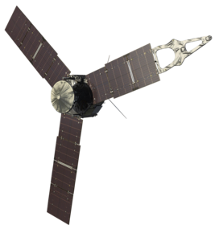

Mariner 9
Ма́ринер-9 (англ. Mariner 9, также известный как Mariner-I) — автоматическая межпланетная станция программы НАСА Маринер Марс 1971. Космический аппарат предназначался для проведения научных исследований Марса с орбиты искусственного спутника. Маринер-9 стал первым искусственным спутником другой планеты.
Пионер 10
«Пионе́р-10» — автоматическая межпланетная станция (АМС) НАСА, предназначенная главным образом для изучения Юпитера и гелиосферы. «Пионер-10» стал первым космическим аппаратом, совершившим пролёт вблизи Юпитера и сфотографировавшим планету, а также первым аппаратом, развившим достаточную скорость для преодоления силы притяжения Солнца. «Пионер-10» был спроектирован и изготовлен в TRW Inc.[en] Оператором миссии являлся исследовательский центр Эймса в Калифорнии.
Юнона
«Юнона»— автоматическая межпланетная станция НАСА, запущенная 5 августа 2011 года для исследования Юпитера[4]. Это второй проект в рамках программы «Новые рубежи». Выход аппарата на полярную орбиту газового гиганта произошёл 5 июля 2016 года. Целью миссии является изучение гравитационного и магнитного полей планеты, а также проверка гипотезы о наличии у Юпитера твёрдого ядра. Кроме того, аппарат должен заняться исследованием атмосферы планеты — определением содержания в ней воды и аммиака, а также построением карты ветров, которые могут достигать скорости в 618 км/ч[5]. «Юнона» также продолжит изучение районов южного и северного полюсов Юпитера, начатое АМС «Пионер-11» в 1974 году (северная полярная область)[6] и АМС «Кассини» в 2000 (южная полярная область)
